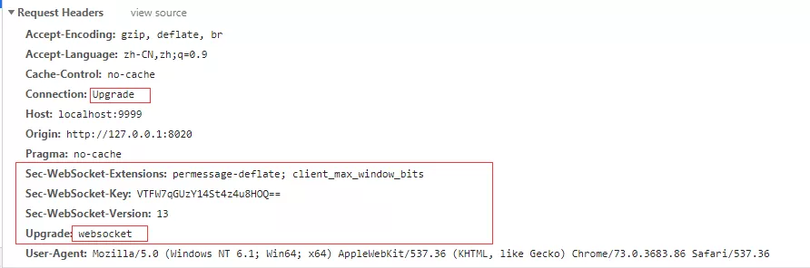
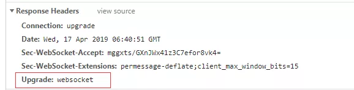
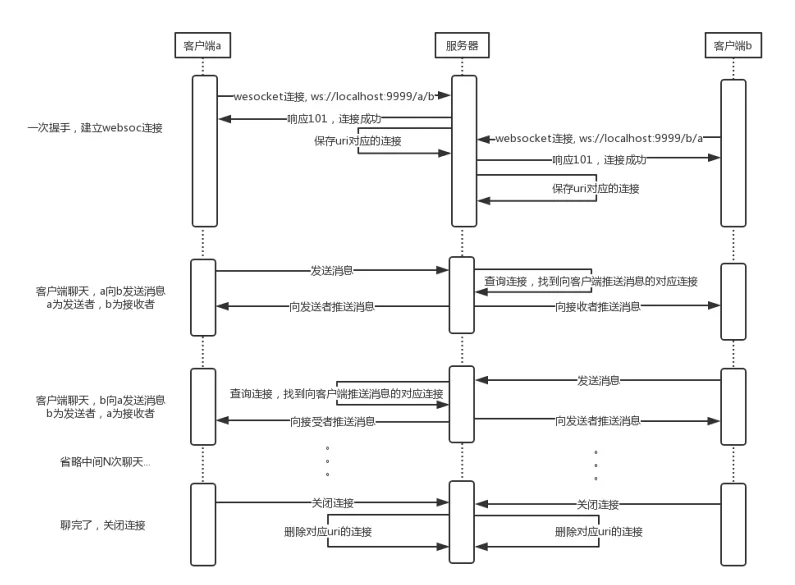

WebSocket是 HTML5 开始提供的一种在单个 TCP 连接上进行全双工通讯的协议。
以前的推送技术使用 Ajax 轮询，浏览器需要不断地向服务器发送http请求来获取最新的数据，浪费很多的带宽等资源。
使用webSocket通讯，客户端和服务端只需要一次握手建立连接，就可以互相发送消息，进行数据传输，更实时地进行通讯。
一次握手建立WebSocket连接
浏览器先向服务器发送个url以ws://开头的http的GET请求，响应状态码101表示Switching Protocols切换协议，
服务器根据请求头中Upgrade:websocket把客户端的请求切换到对应的协议，即websocket协议。

响应头消息中包含Upgrade:websocket，表示它切换到的协议，即websocket协议。

响应101，握手成功，http协议切换成websocket协议了，连接建立成功，浏览器和服务器可以随时主动发送消息给对方了，并且这个连接一直持续到客户端或服务器一方主动关闭连接。
为了加深理解，用websocket实现简单的在线聊天，先画个时序图，直观感受下流程。

网上有websocket在线测试工具，可以直接使用还是挺方便的，http://www.blue-zero.com/WebSocket/
以下是实现的例子，可供参考
SocketService.php
<?php
/**
* Created by cywu
* Date: 2019/10/18
* Time: 14:33
*/
class SocketService
{
private $address = '0.0.0.0';
private $port = 8080;
private $_sockets;
public function __construct($address = '', $port='')
{
if(!empty($address)){
$this->address = $address;
}
if(!empty($port)) {
$this->port = $port;
}
}
public function service(){
//获取tcp协议号码。
$tcp = getprotobyname("tcp");
$sock = socket_create(AF_INET, SOCK_STREAM, $tcp);
socket_set_option($sock, SOL_SOCKET, SO_REUSEADDR, 1);
if($sock < 0)
{
throw new Exception("failed to create socket: ".socket_strerror($sock)."\n");
}
socket_bind($sock, $this->address, $this->port);
socket_listen($sock, $this->port);
echo "listen on $this->address $this->port ... \n";
$this->_sockets = $sock;
}
public function run(){
$this->service();
$clients[] = $this->_sockets;
while (true){
$changes = $clients;
$write = NULL;
$except = NULL;
socket_select($changes, $write, $except, NULL);
foreach ($changes as $key => $_sock){
if($this->_sockets == $_sock){ //判断是不是新接入的socket
if(($newClient = socket_accept($_sock)) === false){
die('failed to accept socket: '.socket_strerror($_sock)."\n");
}
$line = trim(socket_read($newClient, 1024));
$this->handshaking($newClient, $line);
//获取client ip
socket_getpeername ($newClient, $ip);
$clients[$ip] = $newClient;
echo "Client ip:{$ip} \n";
echo "Client msg:{$line} \n";
} else {
socket_recv($_sock, $buffer, 2048, 0);
$msg = $this->message($buffer);
//在这里写你的业务代码
echo "{$key} clinet msg:",$msg,"\n";
fwrite(STDOUT, 'Please input a argument:');
$response = trim(fgets(STDIN));
$this->send($_sock, $response);
echo "{$key} response to Client:".$response,"\n";
}
}
}
}
/**
* 处理握手
* @param $newClient socket
* @return int 接收到的信息
*/
public function handshaking($newClient, $line){
$headers = array();
$lines = preg_split("/\r\n/", $line);
foreach($lines as $line)
{
$line = chop($line);
if(preg_match('/\A(\S+): (.*)\z/', $line, $matches))
{
$headers[$matches[1]] = $matches[2];
}
}
$secKey = $headers['Sec-WebSocket-Key'];
$secAccept = base64_encode(pack('H*', sha1($secKey . '258EAFA5-E914-47DA-95CA-C5AB0DC85B11')));
$upgrade = "HTTP/1.1 101 Web Socket Protocol Handshake\r\n" .
"Upgrade: websocket\r\n" .
"Connection: Upgrade\r\n" .
"WebSocket-Origin: $this->address\r\n" .
"WebSocket-Location: ws://$this->address:$this->port/websocket/websocket\r\n".
"Sec-WebSocket-Accept:$secAccept\r\n\r\n";
return socket_write($newClient, $upgrade, strlen($upgrade));
}
/**
* 解析接收数据
* @param $buffer
* @return null|string
*/
public function message($buffer){
$len = $masks = $data = $decoded = null;
$len = ord($buffer[1]) & 127;
if ($len === 126) {
$masks = substr($buffer, 4, 4);
$data = substr($buffer, 8);
} else if ($len === 127) {
$masks = substr($buffer, 10, 4);
$data = substr($buffer, 14);
} else {
$masks = substr($buffer, 2, 4);
$data = substr($buffer, 6);
}
for ($index = 0; $index < strlen($data); $index++) {
$decoded .= $data[$index] ^ $masks[$index % 4];
}
return $decoded;
}
/**
* 发送数据
* @param $newClinet 新接入的socket
* @param $msg 要发送的数据
* @return int|string
*/
public function send($newClinet, $msg){
$msg = $this->frame($msg);
socket_write($newClinet, $msg, strlen($msg));
}
public function frame($s) {
$a = str_split($s, 125);
if (count($a) == 1) {
return "\x81" . chr(strlen($a[0])) . $a[0];
}
$ns = "";
foreach ($a as $o) {
$ns .= "\x81" . chr(strlen($o)) . $o;
}
return $ns;
}
/**
* 关闭socket
*/
public function close(){
return socket_close($this->_sockets);
}
}
$sock = new SocketService();
$sock->run();
前端页面：web.html
<!doctype html>
<html lang="en">
<head>
<meta charset="UTF-8">
<meta name="viewport" content="width=device-width,initial-scale=1, maximum-scale=1, user-scalable=no">
<title>websocket</title>
</head>
<body>
<input id="text" value="">
<input type="submit" value="send" onclick="start()">
<input type="submit" value="close" onclick="close()">
<div id="msg"></div>
<script>
/**
0：未连接
1：连接成功，可通讯
2：正在关闭
3：连接已关闭或无法打开
*/
//创建一个webSocket 实例
var webSocket = new WebSocket("ws://192.168.31.152:8083");
webSocket.onerror = function (event){
onError(event);
};
// 打开websocket
webSocket.onopen = function (event){
onOpen(event);
};
//监听消息
webSocket.onmessage = function (event){
onMessage(event);
};
webSocket.onclose = function (event){
onClose(event);
}
//关闭监听websocket
function onError(event){
document.getElementById("msg").innerHTML = "<p>close</p>";
console.log("error"+event.data);
};
function onOpen(event){
console.log("open:"+sockState());
document.getElementById("msg").innerHTML = "<p>Connect to Service</p>";
};
function onMessage(event){
console.log("onMessage");
document.getElementById("msg").innerHTML += "<p>response:"+event.data+"</p>"
};
function onClose(event){
document.getElementById("msg").innerHTML = "<p>close</p>";
console.log("close:"+sockState());
webSocket.close();
}
function sockState(){
var status = ['未连接','连接成功，可通讯','正在关闭','连接已关闭或无法打开'];
return status[webSocket.readyState];
}
function start(event){
console.log(webSocket);
var msg = document.getElementById('text').value;
document.getElementById('text').value = '';
console.log("send:"+sockState());
console.log("msg="+msg);
webSocket.send("msg="+msg);
document.getElementById("msg").innerHTML += "<p>request"+msg+"</p>"
};
function close(event){
webSocket.close();
}
</script>
</body>
</html>
以上是文章全部内容，有需要学习与经验交流的友人请加入Swoole交流群学习与交流的咱们一起学习，有问题一起交流，一起进步！前提是你是学技术的。感谢阅读！